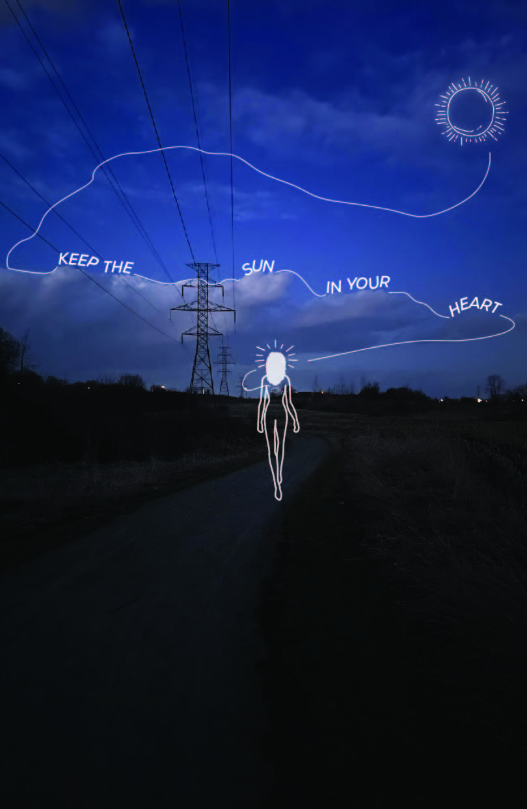

Whether it’s a bold statement piece or a subtle backdrop, my designs invite connection and inspire mood.
Hi! I'm Naveena, a design student currently pursuing a degree at the University of Waterloo Stratford School of Interaction Design and Business. With design, technology, and business combined in one degree I am cultivating my skills in graphic design, interaction design, product design, photography, branding, marketing, and global business.
My love for using colour to create captivating atmospheres that deeply move viewers, paired with a blend of marketing and functionality build the foundation of my approach to design.
When I am not working on a project, you can find me enjoying a cup of tea, thrift shopping, watching a good film, or listening to my favourite indie and RnB songs on repeat.
Below you will see selected works showcasing the different areas of design that I have explored.
This is my redesign for GTs Living Foods and their SYNERGY Raw Kombucha product line. After thoroughly researching the company, I established that there was a need to bridge the gap between the aesthetics of the umbrella brand and SYNERGY, by turning the umbrella brand into a fun, vibrant wellness brand targetting young people. My campaign featured a logo and package redesign with new social media visuals. Pictured above, you will see the logo redesign, an excerpt from the product shoot, as well as the product mock-up.
posters, posters, posters

One of the first forms of digital media I have created are posters! Pictured above are a few of the most recent and my favourite posters that I have designed. The first poster (starting from the left) is part of a diptych where I captured photos of a trail I like to walk on when I need some inspiration from nature. I illustrated the figure, used typography, and incorporated the sun to create an atmospheric, uplifting, and celestial aesthetic.
The next two posters are designed to convey my identity as a designer and my style. I was also tasked to incorporate A.I into my design for the first time, so I generated the image of the lotus flower in the second poster.
User Experience
My colleagues and I designed a housing web application for students to make the search for housing less lonely and daunting. After thorough research, interviews, user tests, and insights from our own experiences, we determined that three key problems exist in the housing market for students: lack of support, information, and transparency. With that in mind, the features of this app have been designed to foster community-building and finding information easier. The features include messaging landlords and renters, leaving reviews, and a renters rights page. Take a look at our prototype here!
Contact
Lets create and collaborate together. Say hello by email or connect through LinkedIn.